S3++ Pozega 2014 (July 12th - July 22nd): PROGRAM
PROJECTS
- Exploring the Genome Architecture with Next-generation Sequencing
- Shedding Light on Fractals
- Targeting Cancer Cells using Functionalized Nanoparticles
- Human Microbiota: Friends or Foes?
WORKSHOPS
LECTURES
PROJECTS
Exploring the Genome Architecture with Next-generation Sequencing
 One of the breakthroughs in molecular biology was the discovery of the genetic code, because DNA of every organism hides important information dictating not only its future, but also revealing its ancient evolutionary past. Nowadays we are facing a rapid development of the new generation sequencing, followed by a multitude of novel applications in biology and medicine. For example, it is possible to sequence several human genomes in a matter of days. The ability to sequence the whole genome of many related organisms has allowed large-scale comparative and evolutionary studies to be performed that were unimaginable just a few years ago. In terms of evolution, the next generation sequencing enabled us to investigate depth of information beyond the capacity of traditional DNA sequencing technologies and therefore showed that variations in the genomic structure, such as variation in copy numbers and inversions of DNA sequence, are a major source of human evolution and phenotypic variation.
One of the breakthroughs in molecular biology was the discovery of the genetic code, because DNA of every organism hides important information dictating not only its future, but also revealing its ancient evolutionary past. Nowadays we are facing a rapid development of the new generation sequencing, followed by a multitude of novel applications in biology and medicine. For example, it is possible to sequence several human genomes in a matter of days. The ability to sequence the whole genome of many related organisms has allowed large-scale comparative and evolutionary studies to be performed that were unimaginable just a few years ago. In terms of evolution, the next generation sequencing enabled us to investigate depth of information beyond the capacity of traditional DNA sequencing technologies and therefore showed that variations in the genomic structure, such as variation in copy numbers and inversions of DNA sequence, are a major source of human evolution and phenotypic variation.
In this project participants will be exposed both to the “dry” and “wet” molecular biology. First, they will learn to use bioinformatics tools to assess large scale data. The starting point will be genome and transcriptome sequencing data of different primates, and the main task will be to use given information to find structural variations such as deletions, duplications and translocations in the genome of the respective species. Further on, we will move on to the lab and experimentally validate the existence of interesting candidates by PCR and gel electrophoresis Finally, in order to understand how variations in the genome architecture may lead to phenotypic variation, we will look for the connection between these structural variations and possible effects on gene expression.
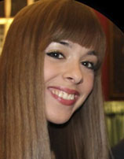 Matilda Males
EMBL Heidelberg, Germany
Matilda obtained her bachelor’s degree in molecular biology at the University of Zagreb, followed by a master’s degree at University of Heidelberg in Germany. Now, she is doing a PhD in genomics at EMBL Heidelberg, being particularly interested in the role of the non-coding genome in the embryonic development. When not working, she can be found swing dancing, doing yoga or just chilling with a good book. Matilda is participating in the Summer School of Science since 2006, twice as a high-school student and later twice as a workshop leader.
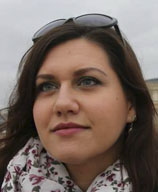 Jelena Tica
EMBL Heidelberg, Germany
Jelena is currently doing a PhD in molecular biology at EMBL Heidelberg and she is particularly interested in genomic structural variations, cancer genomics and genome evolution. Before she moved to Germany, she obtained her B.Sc. and M.Sc. degree in molecular biology at University of Zagreb. In her free time, Jelena likes to read books, watch movies and play computer games. Also, she goes to the gym, learns German and writes about beauty-related inventions in her blog.
Shedding Light on Fractals
 We live in a three dimensional world, so we know what a three dimensional object is (for example, a ball). We can also understand two dimensional (a circle), even one dimensional objects (a line), but would it make any sense to talk about non-integer dimensions, such as 2.65 or 1.3? It turns out it would; such objects are called fractals. They can be easily found in nature if you know where to look. Many different physical processes, such as diffusion, aggregation and electrical discharge, result in fractals. Through the analysis of the incipient structure we can gain valuable information on the underlying microscopic process.
We live in a three dimensional world, so we know what a three dimensional object is (for example, a ball). We can also understand two dimensional (a circle), even one dimensional objects (a line), but would it make any sense to talk about non-integer dimensions, such as 2.65 or 1.3? It turns out it would; such objects are called fractals. They can be easily found in nature if you know where to look. Many different physical processes, such as diffusion, aggregation and electrical discharge, result in fractals. Through the analysis of the incipient structure we can gain valuable information on the underlying microscopic process.
In this project we will investigate the properties of fractals arising from aggregation of colloidal particles using light scattering techniques which are used in many modern experiments. In the course of the project we will design and construct the apparatus, write the necessary software and conduct a numerical simulation of the aggregation process. Through the comparison of the experiment and the simulation we will gain information on the process governing the growth of the fractal cluster.
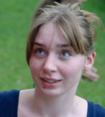
Marija Doslic
Faculty of Science, University of Zagreb, Croatia
Marija is a student of physics at the Faculty of Science at the University of Zagreb, where she is currently working on her diploma thesis in the field of high Tc superconductors. She has participated in high school competitions both as a student and as a mentor. In her spare time she enjoys reading newspapers (all of them), crocheting, travelling and hiking with friends.

Veronika Sunko
Faculty of Science, University of Zagreb, Croatia
Veronika is a master student of physics at the Faculty of Science, University of Zagreb. She recently worked on the dynamics of glassy systems, and is currently working on her diploma thesis concerning complex magnetic systems at the Institute of Physics, Zagreb. She likes hiking, reading and experimental cooking.
Targeting Cancer Cells using Functionalized Nanoparticles
 One of the major problems in cancer treatment is that cancer cells are hard to distinguish from the healthy cells. This makes it difficult to design a drug that kills only cancer cells but does not affect the healthy ones. The cancer cells do however tend to overexpress certain membrane receptors. Membrane receptors are special proteins located in the cell membrane, which allow the cell to communicate with the outside world. In the recent years a novel idea based on multivalency allows us to sharply target only cells with receptor population above a certain threshold. A multivalent particle is a particle that can form many simultaneous bonds. Therefore, we can design a drug that attaches only to cancer cells but not to healthy ones. Modern computers allow us to test and refine these ideas with simulations before experimenting with new drugs on actual patients.
One of the major problems in cancer treatment is that cancer cells are hard to distinguish from the healthy cells. This makes it difficult to design a drug that kills only cancer cells but does not affect the healthy ones. The cancer cells do however tend to overexpress certain membrane receptors. Membrane receptors are special proteins located in the cell membrane, which allow the cell to communicate with the outside world. In the recent years a novel idea based on multivalency allows us to sharply target only cells with receptor population above a certain threshold. A multivalent particle is a particle that can form many simultaneous bonds. Therefore, we can design a drug that attaches only to cancer cells but not to healthy ones. Modern computers allow us to test and refine these ideas with simulations before experimenting with new drugs on actual patients.
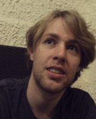
Tine Curk
University of Cambridge, UK
Tine is a PhD student in computational chemistry at the University of Cambridge, UK. He received bachelor and master’s degrees in physics from the University of Maribor. Tine is an expert on computer modeling of micro scale systems, such as polymers and nanoparticles. His main research tools are statistical mechanics and Monte Carlo simulations. In his free time Tine rows, chases rabbits, makes creative sandwiches and enjoys good music.
Human Microbiota: Friends or Foes?
 Our body hosts more than a thousand different varieties of microorganisms with a complex distribution of microbial communities within specific sites. The community of microbes colonizing the human body is referred to as microbiota. These microbiota play essential roles in energy metabolism, regulating our immune system and more importantly act as protective shield preventing pathogenic bacteria from colonizing our body. Disruption of the microenvironment and the colony architecture comprising of specific species of microorganisms can often disrupt the delicate balance of our local microbiota leading to harmful side effects or even diseases. Such imbalance in microbiota is associated with many well-studied disorders such as autoimmune disease, obesity, eczema and psoriasis.
Our body hosts more than a thousand different varieties of microorganisms with a complex distribution of microbial communities within specific sites. The community of microbes colonizing the human body is referred to as microbiota. These microbiota play essential roles in energy metabolism, regulating our immune system and more importantly act as protective shield preventing pathogenic bacteria from colonizing our body. Disruption of the microenvironment and the colony architecture comprising of specific species of microorganisms can often disrupt the delicate balance of our local microbiota leading to harmful side effects or even diseases. Such imbalance in microbiota is associated with many well-studied disorders such as autoimmune disease, obesity, eczema and psoriasis.
In an effort to make the students appreciate this inter-individual and also intra-individual microbial diversity, this project will offer an opportunity to learn basic microbiology technics like bacterial cultivation, Gram staining and biochemical tests that will help them identify their own bacteria. Furthermore the students will get to know some biotechnology techniques like bacterial transformation, DNA extraction, PCR and transgenes detection. In the course of this project, the students will be challenged to ask questions and to use their critical thinking.
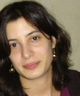
Marta Figueiredo
University of Zurich, Switzerland
Marta did her Master’s degree in Pharmaceutical science at the University of Porto, Portugal. Working as a pharmacist, she missed the excitement of learning new things, so she went back to academia. She is currently working as a Ph.D student on the topic of kidney physiology. Besides science, she enjoys outdoor activities and meeting new people.
Teambuilding workshop: Connectability
It is a part of human nature to connect and be connected. To establish a bond with another human being or a group we need to be open, honest and ready to explore. From a good connection comes understanding and the ability to create things and ideas together. That is when the whole truly becomes greater than the sum of its parts. This is why we will devote the first session to establishing connections! In an active, moving and friendly manner, having lots of fun along the way.
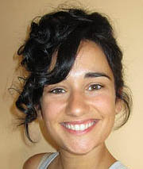
Workshop leader: Ivana Stulic (The Generali Group, Zagreb, Croatia)
Research Swapshop
Robots! Firing!
General programming skills are invaluable in almost any field of today’s scientific research as the amount of available data and the expected pace of progress increase exponentially. From biology to neuroscience, from social sciences to economics, being able to develop their own programs and test their ideas quickly has become a crucial skillset, one that is too often neglected outside of computer science. This workshop aims to present programming from a different view, one which is much more interactive, responsive and fun. The students will be encouraged to come up with the idea for their own artificial intelligence “battle tank”, which they will then together program.

Workshop leader:
Ivo Sluganovic (University of Oxford, UK)
The chemical beauty of colors
Have you ever wondered why the autumn is so beautiful? Our perception of the world is defined by colors we see. If you start to think about it, a few question emerge in an instant. Why do we see colors? What determines the color? How does the nature utilize colorful compounds? We will try to scratch the surface and discuss a few topics regarding this matter. We will explore the chemical and electronic origins of colors. We will see how some compounds change colors in deferent environment and we will use this property to determine the pH of some household liquids. We will see that the purple colour is a combination of blue and red by separating them using chromatography. In the end we'll burn some salt to see what happens and explain how the fireworks works!

Workshop leader:
Aleksandar Salim (EPFL Lausanne, Switzerland)
Let’s boil an egg!
Have you ever wondered how the world looks from protein`s point of view? In this swapshop we will use Cyanobacteria proteins to explain the terms protein stability, folding and refolding. These bacteria contain an elaborate light-harvesting antenna complex in addition to chlorophyll molecules. This chromophore acts to report the integrity of the protein structure. When in its native form, the protein has a beautiful dark blue color. When it is unfolded, its blue color fades away. In simple terms we’ll use this plain system to investigate the process of protein denaturation and renaturation. Basically, we are going to try to do and explain the process of “boiling an egg”. By complementing this approach with the popular internet game “Fold it” students will gain insight into protein structure and how it is impacted by its surrounding.

Workshop leader:
Aleksandra Vancevska (EPFL Lausanne, Switzerland)
How to prevent epidemics using mathematics?
Mathematical modeling is the use of mathematics to describe real world phenomena, investigate important questions about observed world, test ideas and make predictions. Instead of undertaking actual experiments, modeler undertakes experiments and simulations on mathematical representation of the real world. This is a very powerful tool to test your hypothesis and predict future behaviors. Perhaps that’s the reason it is used so widely, not only in natural sciences and engineering but also in social sciences and economics. Participants will learn basics of mathematical modeling in biology. They will make model of population growth, compare it with actual data, think about model deficiencies, explain deviations and try to improve it. They will also make models of spreading of infectious disease.

Workshop leader:
Gabriela Clara Racz (University of Zagreb, Croatia)
What makes us think light is a wave?
Light is a particle and a wave. The purpose of this workshop will be to demonstrate wave nature of light and to introduce students to methods used in investigation of natural phenomena. Light is an electromagnetic wave where its components, electric and magnetic fields, vibrate. It inherits properties of mechanical waves such as diffraction and dispersion. Diffraction refers to various phenomena which occur when a wave encounters an obstacle or a slit. Dispersion, on the other hand, is the phenomenon in which the phase velocity of a wave depends on its frequency or alternatively when the group velocity depends on the frequency. These phenomena are the cause of appearance of light and dark stripes on the background and decomposition of white light to rainbow of colors. This workshop is envisioned as combination of a lecture and hands-on experiments where students will be given an opportunity to find out more about these phenomena.
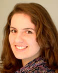 
Workshop leaders:
Tea Muzic (University of Copenhagen, Denmark) & Ivan Pribanic (University of Rijeka, Croatia)
LECTURE SCHEDULE
July 13th 2014
Ivan Djikic (Goethe University, Germany): The border is only within ourselves
July 14th 2014
Ivan Dokmanic (EPFL Lausanne, Switzerland): “Hearing” the shape of a room, and other treats with echoes
July 16th 2014
Ivan Halasz (Institute Rudjer Boskovic, Croatia): Efficient, selective and environmentally-friendly solvent-free chemical reactions
July 17th 2014
Sir R. Timothy Hunt (London Research Institute, UK), Nobel laureate, medicine 2001: TBA
July 18th 2014
Tibor Pakozdi (EMBL Heidelberg, Germany): Regulatory landscape of the genome
July 19th 2014
Round table: “Why the society needs scientists?”
July 20th 2014
Vernesa Smolcic (University of Zagreb, Croatia): The development of galaxies through the history of universe
ABOUT THE LECTURERS
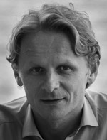Ivan Dikic is currently Director of the Buchman Institute for Molecular Life Sciences and the Institute of Biochemistry at the Goethe University in Frankfurt, Germany. His scientific interests are focused on studying ubiquitin, a small protein that is covalently attached to thousands of proteins inside the cell thus regulating a number of cellular processes. His recent recognitions and awards include the prestigious Leibniz Award, the Jung Prize for medicine and the William Rose Award in 2013. He is a member of the national academy of Germany, Leopoldina and European Molecular Biology Organization (EMBO).
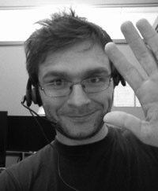Ivan Dokmanic is currently wrapping up his doctorate at Ecole Polytechnique Fédérale de Lausanne, Switzerland, where he is doing research in signal processing and acoustics. He received the Dipl. Ing. degree in electrical engineering from University of Zagreb in 2007. He was a teaching assistant at the Faculty of Electrical Engineering and Computing in Zagreb from 2007 to 2010, with excursions as a codec developer for MainConcept AG, and as an audio effects designer at Little Endian Ltd. His research interests include inverse problems in acoustics, digital audio processing, and fundamental signal processing.
 Ivan Halasz was born in Zagreb. He graduated chemistry and obtained his PhD from the University of Zagreb. He spent two years as a post-doc at the Max-Planck-Institute for Solid State Research in Stuttgart. Since 2012 he holds the position of a research associate at Rudjer Boskovic Institute in Zagreb. His research is devoted to chemistry of the solid-state with an emphasis on mechanochemical reactions. He published a number of research articles including papers in Angewandte Chemie and Nature Chemistry.
Ivan Halasz was born in Zagreb. He graduated chemistry and obtained his PhD from the University of Zagreb. He spent two years as a post-doc at the Max-Planck-Institute for Solid State Research in Stuttgart. Since 2012 he holds the position of a research associate at Rudjer Boskovic Institute in Zagreb. His research is devoted to chemistry of the solid-state with an emphasis on mechanochemical reactions. He published a number of research articles including papers in Angewandte Chemie and Nature Chemistry.
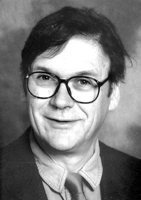Sir Richard Timothy Hunt was awarded the 2001 Nobel prize in Physiology or Medicine together with Paul Nurse and Leland H. Hartwell for their discoveries of protein molecules that control the division (duplication) of cells. Sir Hunt studied Natural Sciences at Clare College, Cambridge. In 1968 he completed his PhD at the Department of Biochemistry in Cambridge with the title “The Synthesis of Haemoglobin”. In 2006 he was awarded the Royal Medal for 'discovering a key aspect of cell cycle control, the protein cyclin which is a component of cyclin dependent kinases'. He was knighted by the Queen in the same year. You can read more about Sir Tim Hunt here.
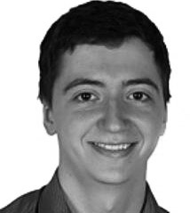Tibor Pakozdi is currently a Ph.D. student at the European Molecular Biology Laboratory in Heidelberg, Germany. He received his B.Sc. degree in Bioinformatics and Computational Biology from Jacobs University Bremen, after which he joined Furlong group at EMBL to work on regulatory genomics. He has been frequently involved in Summer School of Science, first as a student, and later in teaching computer science and genomics courses.
 Vernesa Smolcic is currently an assistant professor at the Department of Physics, Faculty of Science, University of Zagreb. She received her PhD from University of Heidelberg after which she did her postdoc at Caltech (California Institute for Technology) and spent three years at University of Bonn. She is the first female scientist in Croatia to receive funding from European Research Council (ERC) dedicated to investigators at an early stage of their careers for the project “Hole Growth through Cosmic Times: Paving the Way for the next generation sky surveys”.
Vernesa Smolcic is currently an assistant professor at the Department of Physics, Faculty of Science, University of Zagreb. She received her PhD from University of Heidelberg after which she did her postdoc at Caltech (California Institute for Technology) and spent three years at University of Bonn. She is the first female scientist in Croatia to receive funding from European Research Council (ERC) dedicated to investigators at an early stage of their careers for the project “Hole Growth through Cosmic Times: Paving the Way for the next generation sky surveys”.
Copyright © 2014 Society for Out of Frame Education. All Rights Reserved.
Webdesign: Martina Mijuskovic. General text: Branimir Lukic and Martina Mijuskovic. Croatian translation: Matilda Males.